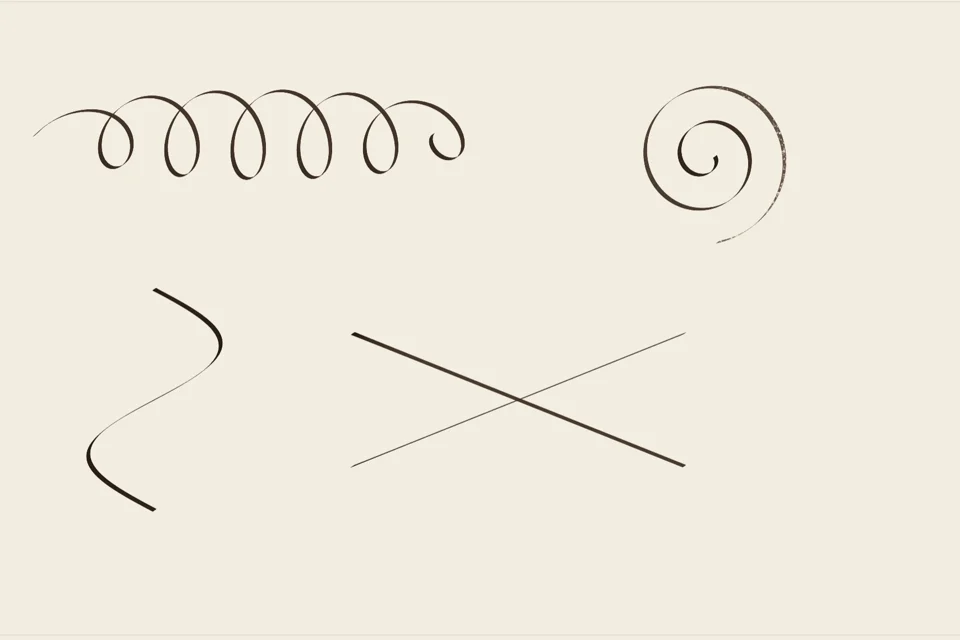
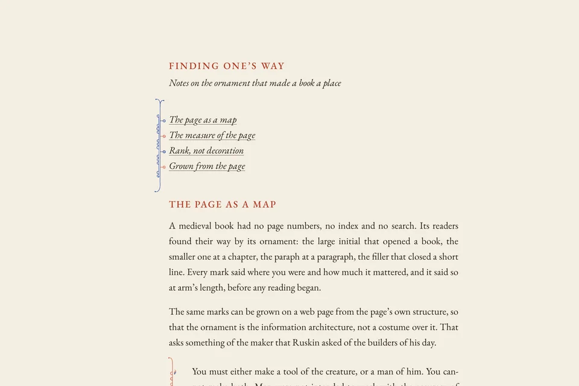
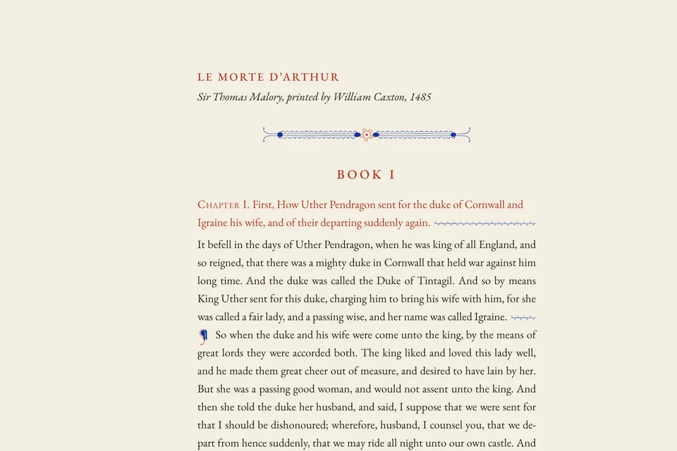
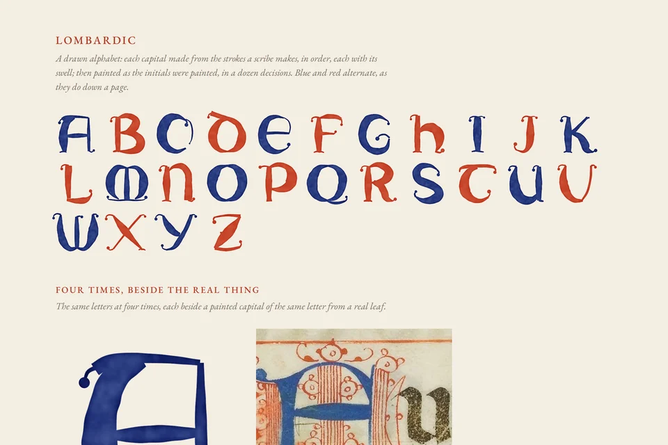
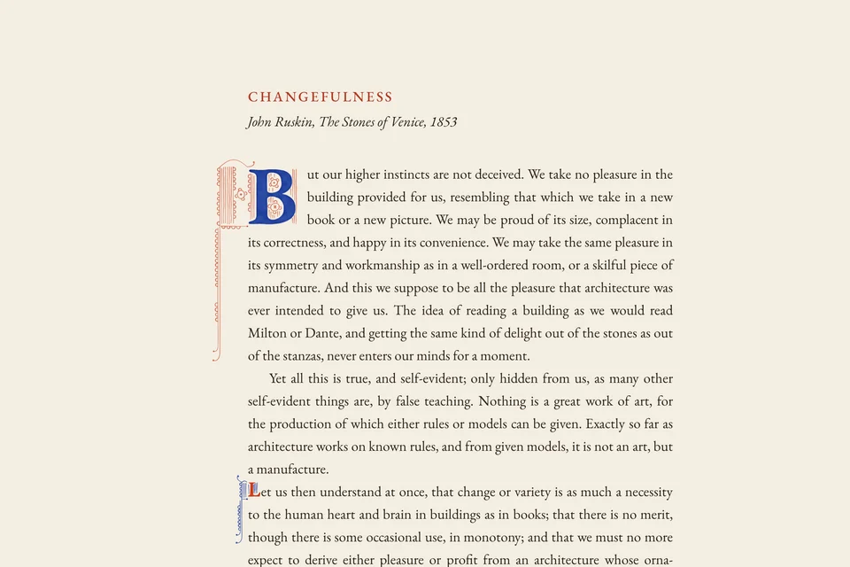
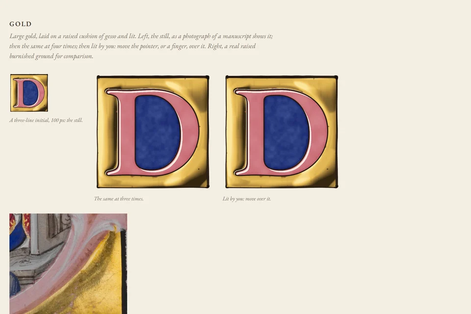

Ivy border
The bar border of a French Book of Hours, c. 1450–1500. Flowers and a wild strawberry are set first, gold ivy and pen dots evenly round them, and the stems spring from the bar until they have reached every one. On a phone the same rule grows a headpiece. It can grow in front of you: stems lengthen, leaves unfold.
Space colonization, worn gold on bole, a pen that pools.

Ink
The medium engine, first tool: a broad pen with mass, following your hand in true curves; ink that flows per unit of time, pools where you rest, merges wet into wet, darkens over dry ink, and breaks dry on the paper’s tooth as the dip runs out. Write on it with a mouse or a stylus. Everything else is to be repainted through this.
Draw on it. A live four-times loupe sits beside a real pen line from a fifteenth-century psalter.
Real strokes
A library of 380 real brush and pen strokes cut from public-domain museum scans (the Met and the Cleveland Museum of Art): Lombardic bowls and stems in lapis and vermilion from choir books, penwork hairlines, and East Asian calligraphy with its loaded starts, dry-brush splits and pooled ends. Each with its centreline and width measured; the ground truth the medium is calibrated against.

Frames
Penwork for the boxes a web page actually has: a quotation with a rule down its gutter and a diple at each line, a figure with head and foot rules, a code block held at two corners, an aside, and a contents list with a staff down the margin. Each frame is grown from its box's measured lines and changes form on a phone; under ?draw each draws itself as it scrolls into view.
The book's vocabulary, doing what a book could not.

Wayfinding
The small pen ornament a rubricator laid through a book so a reader could find their way: paraphs drawn in a few broad-pen strokes, alternating red and blue; line-fillers fitted to the real line boxes, closing every short line to the measure; breaks between chapters and books drawn in proportion to their rank. Shrink the page to a tenth and you can still see where the books begin.
Pen only. Malory, Le Morte d'Arthur, from Caxton's printing.
Watch it rubricated · as you read · in the manner of Hours, Cadel, Doodle, Cyber, Deco, Map, Score, Blueprint, Occult · by night · lavish

Lombardic alphabet
Twenty-six capitals drawn, not set: each letter is its ductus, the strokes a scribe makes in order and direction, each with its swell, and painted as the penwork capitals of Italian choir books were: one wash of lapis or vermilion, pooled at its edge. Nine are shown at four times beside a real capital of the same letter.
A foundation: the initials and borders will draw their letters from it.

Penwork initial
The pen-flourished initial of Gothic manuscripts: a letter in one flat wash, and around it in the other colour fine penwork grown from the letter's own shape: panels of vertical hairlines, eyes in its counters, scallop chains, a staff running down the margin. A smaller initial in the other colours marks a lesser opening.
In progress: the letter is still a roman type form; a drawn Lombardic alphabet comes next.

Gold
Large gold, not as a texture but as a mirror bent over a raised cushion of gesso: the shape is baked into a height field, lit once as a museum photograph lights it, and lit again live by your pointer. Beside it, a real raised burnished ground from the Met for comparison.
A study in progress: research/07-gold.md.

Pen and paint
A study of single marks, at size and at four times: the pen line, the branch that leaves its stem and curls, the leaf in each pigment, gold laid on red bole and worn through. Nothing larger can be better than these.
A study, not a composition.